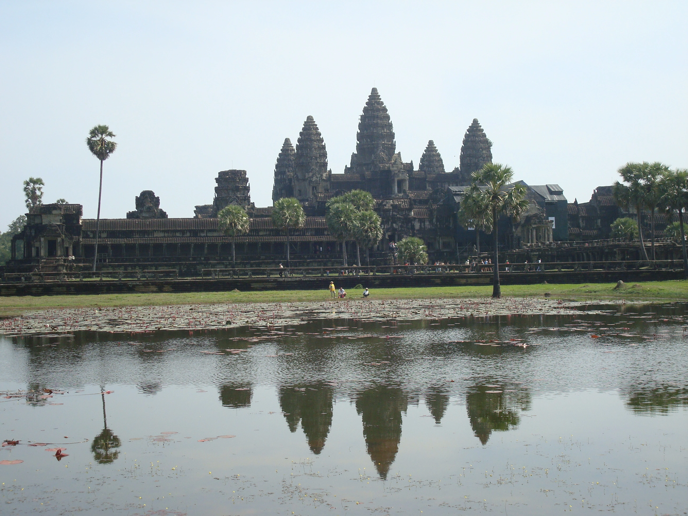

"I must start to run and I already see the snow falling and the night that comes down at 5pm. The enthusiasm and the curiosity are fading away despite the pleasure of roaming has remained the same. I am still down to earth and despite of trying to catch the flight and succeeding only partially, my mood has always been affected from some setback. I would like to close a chapter before starting a new one and I truly hope I can do it. I really like you Phnom Pehn and I tell you in the most direct way. The mix between the old and the new, that sort of respect you have for your past and the smiles that should not be present but are there anyway and that make a difference. And so the difference between yes and no, the scale that goes down on the right side, just like me, towards Sihanoukville". (PHNOM PEHN 05/12/13)

"There is a lot to write, all has still to be written. There is a finale to tell and there is the feeling to have reached the goal, the final target and the only thing that has to be still written is the end of the story. Unfortunately time slips from my hands like grains of sand, the horizon will not be the same and the temperature neither. There will be four walls to keep my thoughts together, maybe friendly walls, certainly the walls I grew up with, soaked in memories and time marks. The brutality with which time is calculated in every single smaller and smaller and smaller unity. Time is an enemy of this tale, the one that can overwrite what I write and the one and only that can put the word end. Time always wins although I always knew I was fighting against windmills. Now I only have to write my own ending, what I have left in my hands after all this slow and thoughtful going, after all the buses, the trains, the boats, the airplanes and the steamboats. Between the first pages of this diary I asked myself what this longed dwelling that was buzzing in my head was and I now believe, after many months on the road, to be able to answer the question. I truly believe to have found what I was looking for, a space where it is still possible to escape the reality that surround us, disregarding the good and the bad, what it is right and what it is wrong. This place exists, nature allows herself to confine humanity to the other side of the island and to keep the best part of the cake. Despite many lost battles, I am fully convinced of the fact that some green triumphant soldier, somewhere still exists, not only here. But this place unlike the others gives itself to me and my perversions, arousing some sort of sexual appetite. Time is just a star that burns faster than the others. Water is the liquid crystal and the plancton pays tribute. Bamboo is the victim and the perpetrator, it traces her in her inlets, giving comfort to those that live on the island, men or animals regardless. The space is quantifiable in an endless expanse of sand, house of footsteps without destination, crabs in trenches that wait for the arrival of one more wave, of one more existential threat. Everybody is looking for a space, regardless if they are aware or not. This is the main distinction between real people and the one that live their existence without knowing they are alive. I have found mine here, what allows me to write the word end on my tale". (SIHANOUKVILLE/KO RONG 13/12/13)

"The final comeback. The rising tide, the sunset, the moon that takes its place. Pictures are flowing from the windowseat, horn blasts, the last border to cross, the inevitable night at the airport. And then home, the real one, humble and comfortable dwelling, unchangeable despite the relentless passage of time. This planet will change instead, because things here change so quickly, the east reflects in the west trying to find something that I still do not understand. My skin still carries the marks of this land that carves you with its smile, making you stronger than ever. I think I passed the grade this time even if for one more time not with honours. Sight is a constant proof, you have to put yourself out there to get to know better who you are. I come back home conscious of the fact that soon I will be back in the game, this time trying to get better grades. I come back to the other home, in a completely different place that before I did not know about". (SIEM RIEP 14/12/13)